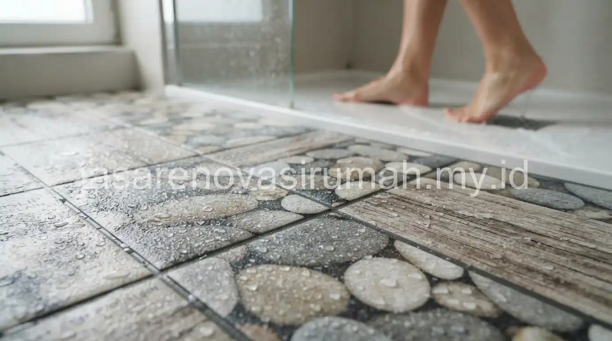

Jenis keramik lantai yang umum digunakan meliputi keramik biasa, granit, dan homogeneous tile, dengan perbedaan utama pada tingkat kekerasan, daya serap air, dan harga yang memengaruhi kecocokannya untuk masing-masing area di rumah.
Memilih jenis keramik yang tepat tidak hanya soal tampilan, tetapi juga daya tahan dan keamanan, terutama untuk area yang sering terkena air seperti kamar mandi dan dapur.
Apa Perbedaan Keramik Biasa, Granit, dan Homogeneous Tile?
Keramik biasa memiliki daya serap air lebih tinggi dan harga lebih terjangkau, granit lebih keras dan elegan namun dengan harga menengah ke atas, sementara homogeneous tile memiliki warna yang konsisten hingga ke lapisan dalam sehingga tahan terhadap goresan.
Berikut perbandingan karakteristik ketiga jenis material tersebut:
| Jenis Material | Karakteristik | Estimasi Harga |
|---|---|---|
| Keramik biasa | Daya serap air lebih tinggi, pilihan motif beragam | Ekonomis |
| Granit | Keras, elegan, daya serap air rendah | Menengah ke atas |
| Homogeneous tile | Warna konsisten hingga lapisan dalam, tahan gores | Menengah ke atas |
Pemilihan jenis material ini sebaiknya disesuaikan dengan fungsi ruangan dan anggaran yang tersedia, karena granit dan homogeneous tile umumnya lebih cocok untuk area dengan lalu lintas tinggi seperti ruang tamu, sementara keramik biasa masih cukup memadai untuk kamar tidur.
Ukuran Keramik Seperti Apa yang Cocok untuk Ruangan Berukuran Kecil dan Besar?
Ukuran keramik besar seperti 60x60 cm cenderung membuat ruangan terlihat lebih luas karena nat yang lebih sedikit, sementara ukuran kecil seperti 30x30 cm lebih fleksibel untuk ruangan dengan banyak sudut atau area sempit.
Beberapa panduan pemilihan ukuran keramik:
- Untuk ruang tamu dan ruang keluarga yang luas, keramik ukuran 60x60 cm atau lebih besar memberikan kesan lapang dan modern.
- Untuk kamar mandi atau dapur berukuran kecil, keramik ukuran 30x30 cm atau 40x40 cm lebih mudah dipasang mengikuti sudut ruangan.
- Untuk area dengan banyak instalasi seperti dapur, ukuran keramik sedang memudahkan proses pemotongan di sekitar titik instalasi.
Baca Juga: 15 Desain Rumah Minimalis Modern Tren 2026
Bagaimana Memilih Keramik yang Tepat untuk Area Basah seperti Kamar Mandi dan Dapur?
Keramik dengan permukaan bertekstur anti-slip dan daya serap air rendah adalah pilihan yang paling tepat untuk area basah agar tidak licin dan mudah dibersihkan dari noda.
Untuk area seperti kamar mandi, pemilihan keramik lantai sebaiknya disesuaikan dengan prinsip yang sama seperti dibahas pada panduan desain kamar mandi minimalis modern, di mana keamanan dan kemudahan perawatan menjadi prioritas utama dibanding sekadar tampilan visual semata.

Kesalahan Umum Saat Memilih Keramik Lantai
Kesalahan yang paling sering terjadi adalah memilih keramik mengkilap untuk area basah karena alasan estetika, padahal permukaan mengkilap cenderung lebih licin saat terkena air.
Kesalahan lain yang perlu dihindari:
- Tidak memperhitungkan kebutuhan nat tambahan pada keramik ukuran besar di ruangan dengan banyak sudut.
- Mengabaikan daya serap air keramik untuk area outdoor yang sering terkena hujan langsung.
- Memilih keramik tanpa mempertimbangkan konsistensi warna antar dus produksi yang berbeda.
Pada akhirnya, memilih jenis keramik lantai yang tepat membutuhkan pertimbangan fungsi ruangan, tingkat keamanan, dan anggaran yang tersedia, bukan sekadar mengikuti tren motif terkini.
Untuk memastikan pemilihan material sesuai kebutuhan proyek Anda, konsultasikan dengan tim jasa kontraktor rumah kami yang dapat memberikan rekomendasi sesuai kondisi dan anggaran proyek.

Ainur Reza
Penulis Profesional & Praktisi Konstruksi
Ainur Reza adalah seorang penulis profesional yang memiliki ketertarikan mendalam pada dunia arsitektur dan konstruksi. Dengan pengalaman bertahun-tahun mengamati tren renovasi rumah, ia aktif membagikan panduan praktis, tips RAB, dan wawasan seputar material bangunan untuk membantu pemilik rumah mewujudkan hunian impian mereka dengan anggaran yang efisien.